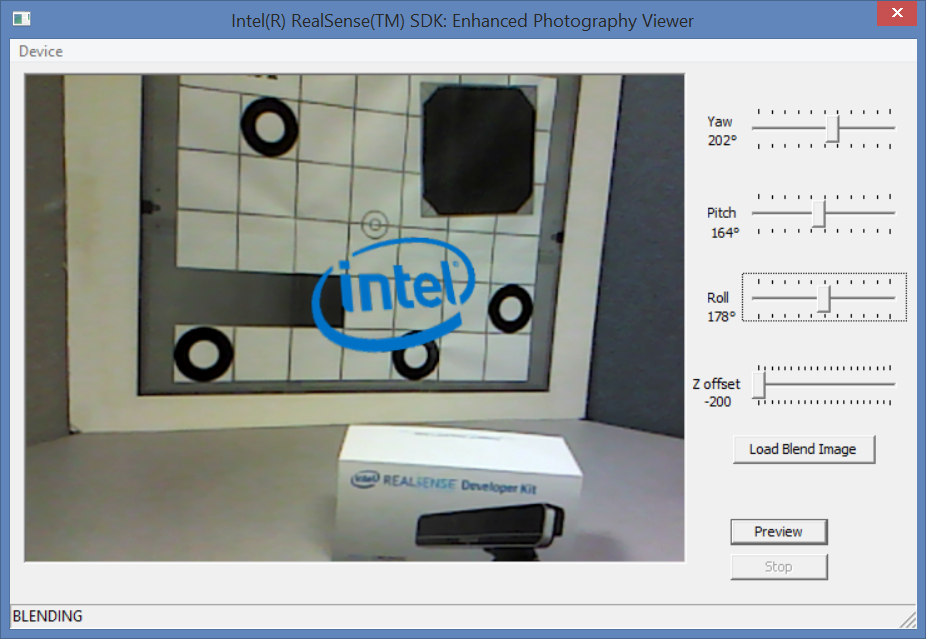

Sample: RF_DepthBlendEP |
Top Previous Next |
|
Introduction The RF_DepthBlendEP sample is a C++ application that demonstrates the depth blending feature of the SDK enhanced photography module. The sample blends a sticker image onto the logo and the user can adjust yaw/pitch/roll of the placement. Launchy The sample can be launched directly from the bin folder of the SDK installation, or compiled and executed using Microsoft Visual Studio. The project and source files are located inside the sample/RF_DepthBlendEP folder. Menu Options From the menu, the user can choose the input device as shown in Figure 154:  Figure 154: Sample DepthBlend GUI Options Click the Preview button to start living streaming. The same button switches between the Preview mode and the Snapshot mode. Choose a good picture and then click the Snapshot button. The image frame freezes to let you work on the snapshot image. Click the Load Blend Image button to load the sticker image. The sample provides the Intel logo as a sample image. The user can choose any JPEG* or PNG* pictures. Click on any position of the snapshot image to place the sticker image onto it. You can also adjust the raw/pitch/roll values of during placement. Finally, click the Stop button to terminate the streaming process.
|